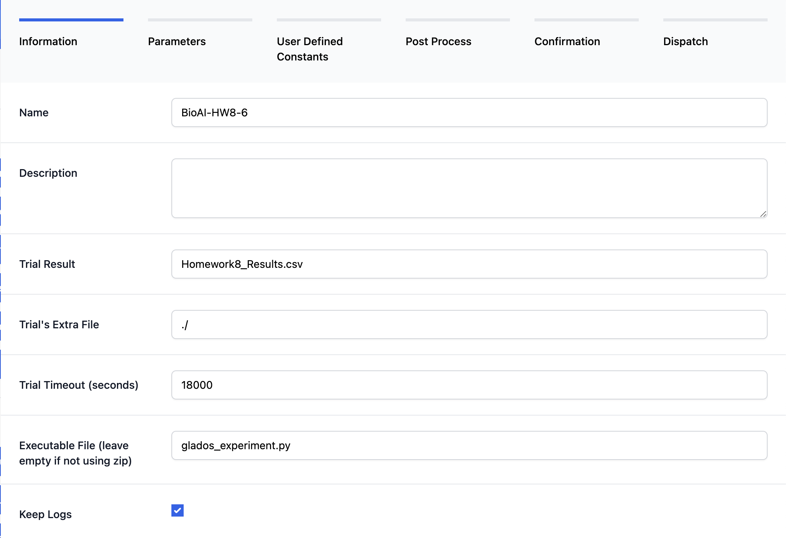
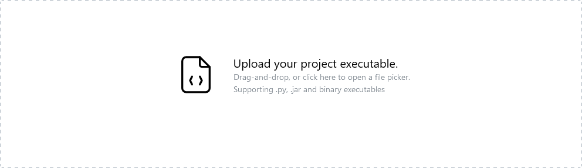
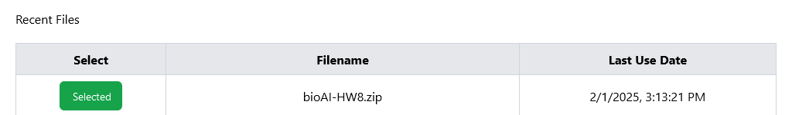

BioAI HW 8 User Guide
This guide is intended for students in CSSE314 BioAI to utilize the GLADOS system to run their completed code.
Warning
HW8 needs to be completed in order for this to run. The code needs to have succeeded in running the evolution to completion (but it does not need to be a great behavior, just some completed behavior).
Step 1: Format the .zip File for the Project
There are a couple things that need to be changed in the HW8 files to ensure that this project runs on GLADOS.
First, in fitness_function, this line needs to be changed:
BEFORE: robotid = p.loadURDF("./URDF_Files/armsBody.urdf")
AFTER: robotid = p.loadURDF("../URDF_Files/armsBody.urdf")
Note
If you do not make the change above, GLADOS will error. The error will look similar to this:

Then, zip all of the project files into a single .zip and give it a appropriate name. (e.g. bioAI_HW8_{RHITUSERNAME}.zip).
Here is a screenshot of the files in the source_code folder to be zipped:

Step 2: Create and Run a New Experiment
First, log in with your Google or GitHub account to access the GLADOS Homepage. This is the screen that wil be presented when the user is logged in:

Information Step
In the top left of the page, select the button to open the new experiment panel.
Fill in the following details:
- Name: Any appropriate name (e.g., BioAI-HW8_{RHITUSERNAME})
- Trial Result File: Set to Homework8_Results.csv
- Trial's Extra File: Set to ./
- Trial Timeout (hours): 5 (default)
- Executable File: Set to glados_experiment.py
Once completed, click the Next button.
Example:

Parameter Step
Next, set up the parameters that GLADOS will handle during the experiment.
Select float from the Parameter list. A new float will appear in the parameters section below. This float parameter needs to include the following information:
- name: mr
- min: 0.2
- max: 0.5
- step: 0.1
Now select integer from the Parameter list. A new integer will appear in the parameters section below. This integer parameter nees to include the following information.
- name: seed
- min: 0
- max: 10
- step: 1
When completed, the parameters section will look like this:

When completed, click Next.
User Defined Constants
These constants ensure that GLADOS and the inserted code recognize the correct variables. Copy and paste the following block into the User Defined Constants section to map the parameter mr to the mutation_probabilty variable and the parameter seed to the random_seed variable.
num_inputs = 4
num_classes = 4
num_solutions = 10
hidden_activations = sigmoid
output_activation = sigmoid
num_parents_mating = 5
num_generations = 2
mutation_probability = {mr}
parent_selection_type = rank
crossover_type = scattered
mutation_type = random
keep_parents = 0
random_seed = {seed}
When pasted, click Next.
Post Process
Leave this box unchecked. Click Next.
Confirmation Step
This step reviews the experiment setup. If the previous steps were followed correctly, the confirmation page should resemble the following:
{
"hyperparameters": [
{
"name": "mr",
"default": -1,
"min": "0.2",
"max": "0.5",
"step": ".1",
"type": "float",
"useDefault": false
},
{
"name": "seed",
"default": -1,
"min": "0",
"max": "10",
"step": 1,
"type": "integer",
"useDefault": false
}
],
"name": "BioAI-HW8-{RHITUSERNAME}",
"description": "",
"trialExtraFile": "",
"trialResult": "Homework8_Results.csv",
"scatterIndVar": "",
"scatterDepVar": "",
"dumbTextArea": "\nnum_inputs = 4\nnum_classes = 4\nnum_solutions = 10\nhidden_activations = sigmoid\noutput_activation = sigmoid\nnum_parents_mating = 5\nnum_generations = 2\nmutation_probability = {mr}\nparent_selection_type = rank\ncrossover_type = scattered\nmutation_type = random\nkeep_parents = 0\nrandom_seed = {seed}",
"timeout": 5,
"scatter": false,
"keepLogs": true,
"workers": 1,
"file": "679e806160f8c8d0c659037d",
"status": "CREATED",
"experimentExecutable": "glados_experiment.py"
}
Click Next.
Dispatch Step
If this is the users first experiment, the "Recent Files" section in the Dispatch Step will be empty. To add a file, drag the .zip file created in Step 1 into the Upload dropbox:

Once uploaded, the file will appear as successfully selected for the experiment:

Click the Dispatch button to send the experiment to GLADOS.
Note
If the experiment fails, the result on GLADOS will look like this:

If this happens, review the above steps to ensure that the experiment was set up correctly. If you are confused why it failed, you can use the System Log button to review the logging of the experiment run to see possible reasons for failure.
Note: You will have to scroll through the log file to find where the error happens. It may not be obvious by just briefly scanning the log file.
See the FAQ section if you are repeatedly unable to run an experiment.
3. Reviewing Results
After the experiment completes, several buttons appear to review and download data:
- Download Results: Click to download the raw
.csvfile. - Download Project Zip: Click to download the
.zipfile containing project and run data. - See Graph: Click to open an interactive graphing module to visualize variable changes during the experiment. For more detailed informtion, view the gif below:

4. FAQ
GLADOS Dev Team Contact Information
For help with running this project, contact Dr. Yoder via email or Teams and he can forward any concerns or questions to the GLADOS Dev Team.
If there are any errors or bugs with GLADOS, a report can be submitted via the Report button at the top right of the GLADOS page.